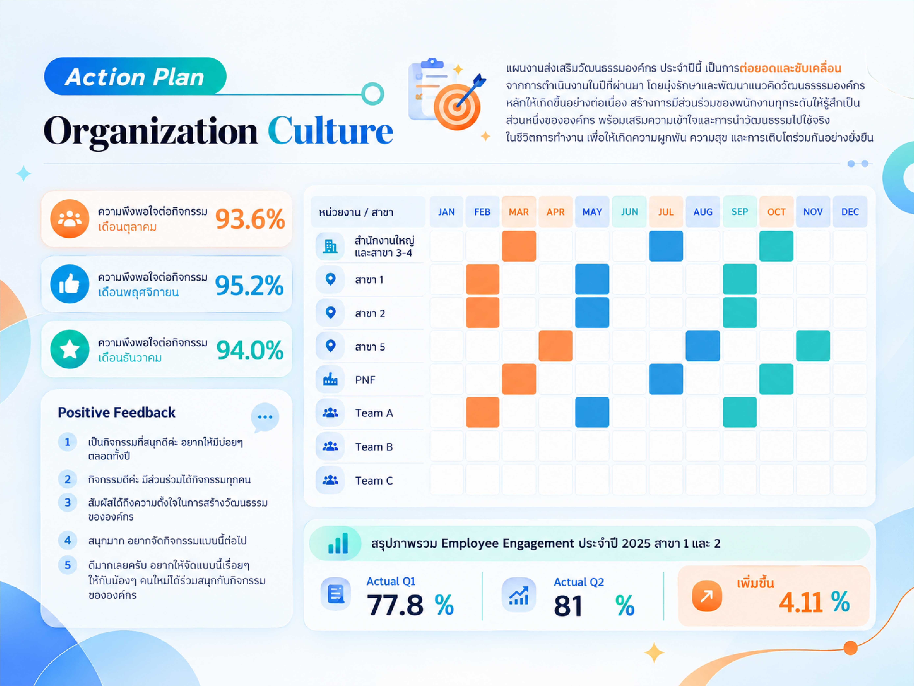

Corporate Culture & Internal Comms
NSL Family Culture Action Plan
Developed and executed a comprehensive year-long action plan to drive the "NSL Family Culture" across all branches and subsidiaries. The initiative focused on fostering a sense of belonging, enhancing understanding of core values, and integrating the corporate culture into daily work life to build engagement, happiness, and sustainable growth.
- 95.2% peak employee satisfaction score for culture activities (November)
- +4.11% increase in Employee Engagement from Q1 to Q2 2025 for Branches 1 and 2
Culture Strategy
Employee Engagement
Internal Comms